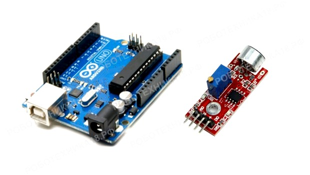
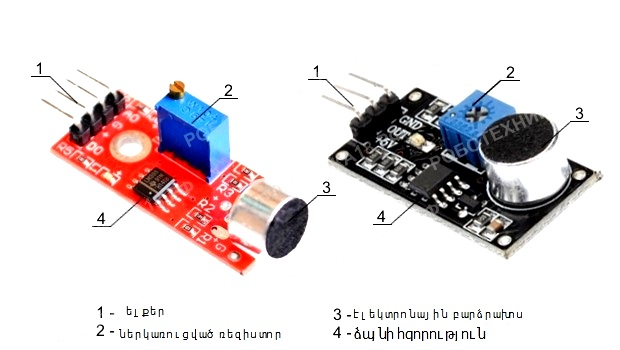
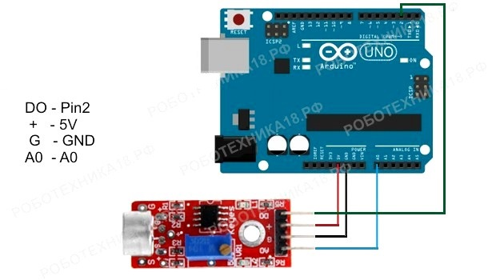

Ինչպես միացնել ձայնի սենսորը Arduino-ին
Սենսորը բաղկացած է տախտակից (տես ստորև նկարը), որի վրա տեղադրված են Arduino Nano- ին միանալու պորտերը , ձայնի ուժեղացուցիչ, կտրող ռեզիստոր և էլեկտրոնային խոսափող, որը զգայուն է բոլոր ուղղություններով եկող ձայնի նկատմամբ: Զգայունության կարգավորիչը (փոփոխական դիմադրություն) թույլ է տալիս կարգավորել խոսափողի զգայունությունը և ընտրել, թե ինչ աղմուկի մակարդակից կգործարկի սենսորը:
Անհրաժեշտ էլեմենտներ
- Arduino Uno / Arduino Nano / Arduino Mega
- breadboard
- ձայնային ցուցիչ KY-037 (խոսափող)
- 1 լեդ և 1 220օհմ դիմադրություն
- լարեր «պապա-պապա» և «պապա-մամա»
Սենսորը սնուցվում է 5 Վ-ից, ելքը (OUT, S կամ AO) միացված է Arduino Uno-ի ցանկացած անալոգային մուտքին, իսկ DO ելքը՝ Pin 2-ին, եթե ցանկանում եք Arduino-ի վրա թվային ազդանշան ստանալ միկրոֆոնի սենսորից:

boolean statuslamp;
void setup() {
pinMode(12,OUTPUT);
pinMode(A0,INPUT);
statuslamp=false;
Serial.begin(9600);
}
void loop() {
Serial.println (analogRead(A0));
if(analogRead(A0)>60) {
statuslamp=!statuslamp;
digitalWrite(12,statuslamp);
delay(20);
}
Կոդի բացատրություն
- Boolean տվյալի տիպը օգտագործվում է C++ ծրագրավորման լեզվում՝ բուլյան արժեքներ (true/false) հայտարարելու համար
- 2. տողում statuslamp=!statuslamp;մենք փոխում ենք լամպի կարգավիճակը ծափահարելիս.
- 3. տողում if(analogRead(A0)>60), 60արժեքի փոխարեն կարող եք փոխարինել ցանկացած արժեք: